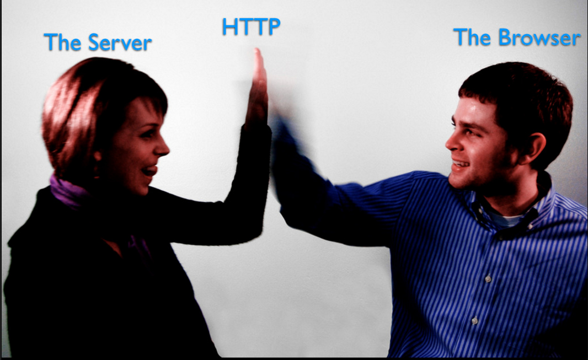

HTTP
What is HTTP?

The Hypertext Transfer Protocol (HTTP) is an application protocol for distributed, collaborative, hypermedia information systems. HTTP is the foundation of data communication for the World Wide Web.
- HTTP is an "application layer" protocol.
- HTTP follows a classical "client-server" model
- HTTP is a TCP/IP based communication protocol
- The standard port for HTTP connections is port 80
- The version of HTTP in common use is HTTP/1.1
- HTTP/2 was published in May 2015
Resources

HTTP is used to transmit resources. A resource is some chunk of information that can be identified by a URL (it's the R in URL). The most common kind of resource is a file, but a resource may also be a dynamically-generated query result, the output of a CGI script, a document that is available in several languages, or something else.
URL (Uniform Resource Locator)

Transaction
HTTP session consists of three phases:
- The client establishes a TCP connection (or the appropriate connection if the transport layer is not TCP).
- The client sends its request and then waits for the answer.
- The server processes the request and sends back its answer, containing a status code and the appropriate data.
- The connection is closed (It's still opened starting with HTTP/1.1)
Methods
| Method | Description |
|---|---|
| GET | Retrieve information from the server. |
| HEAD | Same as GET, but transfers the status line and header section only. |
| POST | Send data to the server for processing. |
| PUT | Store the body of the request on the server. |
| DELETE | Remove a document from the server. |
| TRACE | Trace the message through proxy servers to the server. |
| OPTION | Determine what methods can operate on a server. |
| CONNECT | Converts the request connection to a transparent TCP/IP tunnel. |
| PATCH | Applies partial modifications to a resource |
Themes
Black (default) -
White -
League -
Sky -
Beige -
Simple
Serif -
Blood -
Night -
Moon -
Solarized
Transition Styles
You can select from different transitions, like:
None -
Fade -
Slide -
Convex -
Concave -
Zoom
Point of View
Press ESC to enter the slide overview.
Hold down alt and click on any element to zoom in on it using zoom.js. Alt + click anywhere to zoom back out.
Fragments
Hit the next arrow...
... to step through ...
... a fragmented slide.
Fragment Styles
There's different types of fragments, like:
grow
shrink
fade-out
current-visible
highlight-red
highlight-blue
Slide Backgrounds
Set data-background="#dddddd" on a slide to change the background color. All CSS color formats are supported.
Image Backgrounds
<section data-background="image.png">Tiled Backgrounds
<section data-background="image.png" data-background-repeat="repeat" data-background-size="100px">Video Backgrounds
<section data-background-video="video.mp4,video.webm">... and GIFs!
Background Transitions
Different background transitions are available via the backgroundTransition option. This one's called "zoom".
Reveal.configure({ backgroundTransition: 'zoom' })Background Transitions
You can override background transitions per-slide.
<section data-background-transition="zoom">Pretty Code
function linkify( selector ) {
if( supports3DTransforms ) {
var nodes = document.querySelectorAll( selector );
for( var i = 0, len = nodes.length; i < len; i++ ) {
var node = nodes[i];
if( !node.className ) {
node.className += ' roll';
}
}
}
}
Code syntax highlighting courtesy of highlight.js.
Intergalactic Interconnections
You can link between slides internally, like this.
Speaker View
There's a speaker view. It includes a timer, preview of the upcoming slide as well as your speaker notes.
Press the S key to try it out.
Export to PDF
Presentations can be exported to PDF, here's an example:
Global State
Set data-state="something" on a slide and "something" will be added as a class to the document element when the slide is open. This lets you apply broader style changes, like switching the page background.
State Events
Additionally custom events can be triggered on a per slide basis by binding to the data-state name.
Reveal.addEventListener( 'customevent', function() {
console.log( '"customevent" has fired' );
} );
Take a Moment
Press B or . on your keyboard to pause the presentation. This is helpful when you're on stage and want to take distracting slides off the screen.
Much more
- Right-to-left support
- Extensive JavaScript API
- Auto-progression
- Parallax backgrounds
- Custom keyboard bindings